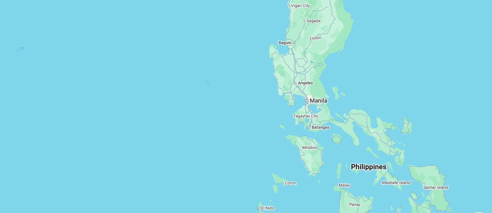

Hidden Gems in Cebu: 5 Places You Must Visit
Just discovered these amazing spots in Cebu! From pristine beaches to local restaurants serving authentic food. The locals were super friendly and the sunset views were absolutely breathtaking.
🏝️

Just discovered these amazing spots in Cebu! From pristine beaches to local restaurants serving authentic food. The locals were super friendly and the sunset views were absolutely breathtaking.
If you're planning a trip to Manila, Binondo (Chinatown) is absolutely worth the visit. The food scene here is incredible - from traditional siopao to modern fusion cuisine. I spent 3 days here and barely scratched the surface!
The Sinulog Festival is one of the most vibrant celebrations in the Philippines. This year's celebration was absolutely spectacular! The street dances, the energy, the music - everything combined to create an unforgettable experience.
After visiting twice, I can confirm that Boracay is worth the visit. The D'Talipapa market is authentic, the sunsets are stunning, and there's accommodation for every budget. My recommendation: go during the shoulder season for fewer crowds.